Análise Comparativa de Chuvas Extremas: Dados de Estações Pluviométricas X Dados em Grade na Região do Rio Grande do Sul
![]()
As relações IDF (Intensidade-Duração-Frequência) são fundamentais para o dimensionamento adequado de infraestruturas, como sistemas de drenagem urbana, canais, galerias pluviais, pontes, passagens molhadas, reservatórios e barragens. Compreender as relações entre a intensidade e a duração das chuvas, aliadas à sua frequência (ou recorrência), permite projetar sistemas capazes de lidar eficientemente com os volumes de água esperados, minimizando os riscos de alagamentos e inundações. A limitação na cobertura espacial das estações pluviométricas exige a espacialização dos dados de chuva e a necessidade de interpolar essas informações para locais sem medições disponíveis. Embora os dados de precipitação fornecidos por grades, frequentemente derivados de modelos climáticos e técnicas de interpolação, sejam valiosos para regionalizar informações de chuvas, eles geralmente utilizam resoluções espaciais de dezenas a centenas de quilômetros, o que pode limitar a captura de variabilidades locais e eventos extremos específicos.Nesse contexto, este estudo teve como objetivo comparar e analisar a espacialização dos dados provenientes diretamente das estações pluviométricas da base HIDRO com os dados de precipitação em grade fornecidos pelas bases XAVIER e CHIRPS, amplamente empregadas no Brasil. Foram comparados os resultados dos padrões de chuvas extremas obtidos por meio das equações IDFs diretamente das estações pluviométricas da base HIDRO com aqueles derivados das bases em grade. A área de estudo abrange todo o estado do Rio Grande do Sul. As diferenças nos quantis de chuva das curvas IDFs foram avaliadas com dados interpolados utilizando os métodos IDW e Krigagem, considerando diferentes distribuições de máximos (Gumbel, GEV e Exponencial) e técnicas para obtenção de parâmetros na análise de frequência. As incertezas entre as distribuições de extremos adotadas foram examinadas e as curvas IDFs foram interpoladas para todas as sedes municipais do estado do Rio Grande do Sul. Os resultados indicam que os dados disponibilizados em grade tendem a subestimar os quantis de chuva.
1 Introdução
As relações de intensidade, duração e frequência (IDFs) possuem diversas aplicações na engenharia, seja na área de projetos de obras hidráulicas ou de planejamento de gestão de recursos hídricos.
No caso de projetos de obras hídricas, as relações IDFs são imprescindíveis para o dimensionamento adequado de infraestruturas, tais como sistemas de drenagem urbana, canais, galerias de águas pluviais, pontes, passagens molhadas, reservatórios e barragens. O conhecimento das relações entre intensidade e duração das chuvas, combinado com sua frequência (ou recorrência), permite projetar sistemas que possam lidar eficientemente com os volumes de água esperados, minimizando o risco de alagamentos e inundações. A aplicação das relações IDFs assegura que as estruturas sejam dimensionadas para suportar eventos de precipitação de alta intensidade e baixa frequência, que são críticos para a proteção de áreas urbanas.
Os projetos de drenagem urbana, por exemplo, utilizam as relações IDFs para calcular a capacidade necessária dos sistemas de escoamento e a capacidade de armazenamento dos reservatórios. De maneira similar, em áreas rurais, estas curvas ajudam a projetar canais de escoamento e práticas de manejo de bacias hidrográficas, contribuindo para a mitigação de problemas relacionados à erosão e à sedimentação.
No campo do planejamento e gestão de recursos hídricos, as relações IDFs são utilizadas para avaliar e prever o impacto das chuvas extremas em diferentes cenários de uso do solo e mudança climática. Elas são essenciais para a elaboração de estratégias de gestão de bacias hidrográficas e para a implementação de políticas de uso do solo que considerem a variabilidade e a intensidade das precipitações. A análise das relações IDFs permite estimar os impactos das mudanças no regime de precipitação sobre a disponibilidade de água e a gestão dos recursos hídricos, orientando decisões sobre a alocação e o uso sustentável da água.
Além disso, no planejamento urbano e rural, as relações IDFs ajudam na avaliação dos riscos associados a eventos extremos e na elaboração de planos de contingência e medidas de adaptação para lidar com os impactos da mudança climática. A integração das curvas IDFs com modelos hidrológicos e hidrodinâmicos é fundamental para o desenvolvimento de estratégias eficazes de gestão de desastres e para a proteção das comunidades e infraestruturas contra eventos de precipitação severa.
As relações IDFs são obtidas através de uma série de dados de chuvas intensas, suficientemente longas e representativas do local de interesse. A partir dessas relações são ajustados modelos de regressão que sintetizam essas relações a partir de equações matemáticas que aproximam essas relações por curvas de regressão. Para a definição das equações IDFs, são analisadas, através de ajustes de distribuições de probabilidade de extremos, as máximas chuvas anuais observadas para diferentes durações de chuva.
O estudo mais representativo sobre as relações IDFs para diferentes regiões brasileiras foi conduzido por Pfafstetter (1957), abrangendo 98 postos pluviográficos distribuídos pelo Brasil, com base em séries temporais parciais. Este trabalho continua a ser uma referência fundamental para muitos projetos de engenharia e estudos relacionados à IDFs no território brasilieiro. No entanto, diante da mudança climática, a avaliação e atualização contínuas dessas relações IDFs tornam-se essenciais para garantir a aplicabilidade das informações de risco em projetos de engenharia e planejamento de recursos hídricos.
A questão da mudança climática tem se tornado cada vez mais relevante nas últimas décadas, atraindo a atenção tanto da comunidade científica quanto da sociedade em geral (Amir et al., 2013). Esse destaque se deve às potenciais consequências que alterações no comportamento hidrometeorológico podem ter sobre os sistemas hídricos, comprometendo, principalmente, sua confiabilidade. Tais mudanças estão desafiando a premissa tradicional da engenharia de recursos hídricos de que a experiência hidrometeorológica passada é um bom indicador para as condições futuras (Milly et al., 2008).
Diversos estudos têm investigado a relação entre a mudança climática e as alterações nos padrões de distribuição, frequência e intensidade dos eventos de precipitação (Asadieh & Krakauer, 2015). Essas alterações de padrões nas distribuições das intensidades e frequência das chuvas podem acarretar sérios prejuízos à sociedade, incluindo a perda de vidas humanas. A análise dessas mudanças está intimamente relacionada ao conceito de estacionariedade, que pressupõe que as variáveis oscilam aleatoriamente dentro de um intervalo de variabilidade constante. Compreender melhor os riscos futuros associados a essas mudanças é crucial para a tomada de decisões, especialmente na formulação de estratégias de adaptação que a sociedade deve adotar.
A avaliação de cenários futuros a partir de resultados de modelos climáticos é realizada a partir de dados climáticos que são gerados em grades. As grades consistem em uma rede regular de pontos ou células que cobrem uma área geográfica, onde cada célula contém dados representativos de uma variável, como a precipitação, para aquela região. A obtenção de dados de precipitação em grade para a avaliação de cenários de mudança climática futura geralmente envolve a combinação de dados observacionais (Huffman et al., 2001), modelagem numérica (Giorgi & Mearns, 2004) e técnicas de interpolação (Semenov & Barrow, 2008). Dados de precipitação são coletados a partir de estações meteorológicas e satélites e, em seguida, interpolados para gerar grades espaciais contínuas. Modelos climáticos simulam as mudanças futuras na precipitação, considerando diferentes cenários de emissões de gases de efeito estufa.
Embora os dados de precipitação em grade, frequentemente derivados de modelos climáticos e técnicas de interpolação, sejam valiosos para fornecer uma visão abrangente sobre a mudança climática em grandes áreas (Li et al., 2014), esses dados são obtidos em resoluções espaciais que variam de dezenas a centenas de quilômetros, o que pode limitar a capacidade de capturar variabilidades locais e eventos extremos específicos (Sillmann et al., 2013).
Em contraste, medições diretas de precipitação em estações meteorológicas fornecem informações locais, refletindo condições reais e específicas de cada ponto de medição (New et al., 2001).Essas medições são cruciais para validar e calibrar os modelos climáticos e os dados em grade, pois as resoluções espaciais dos modelos climáticos globais podem ser insuficientes para capturar as nuances da variabilidade local (Hughes et al., 2013). Após a geração dos dados em grade, técnicas de downscaling são utilizadas para aumentar a resolução espacial e fornecer previsões mais detalhadas.No entanto, ainda com o downscaling, a escala da grade muitas vezes permanece na faixa de dezenas de quilômetros, o que ainda pode não refletir plenamente as características locais (Giorgi & Mearns, 2002) in incluir mais incertezas no processo. Fung et al. (2024) destacam a importância que a resolução espacial e temporal tem na precisão e relevância dos dados de precipitação.
Portanto, é fundamental comparar e analisar os dados provenientes de estações meteorológicas com os dados de precipitação em grade, seja de modelos climáticos ou de outras bases que utilizam técnicas de interpolação espacial. Essa comparação é crucial para avaliar a robustez e a representatividade das análises (Gao et al., 2014; Gudmundsson et al., 2012), especialmente nas relações IDFs, que se concentram em valores extremos de precipitação. Isso ocorre porque os padrões espaciais de eventos extremos podem não corresponder aos utilizados como referência nas técnicas de interpolação para dados em grade (McDonald et al., 2018).
Com base no contexto descrito, este estudo tem como objetivo comparar os resultados dos padrões de chuvas extremas a partir de equações IDFs obtidas diretamente de dados de estações pluviométricas da base Hidro (ANA, 2019), com aqueles advindos de duas bases em grade, amplamente utilizadas no Brasil: CHIRPS (Funk et al., 2015) e Xavier (Xavier et al., 2015, 2017). A área de estudo consiste em toda a região do estado do Rio Grande do Sul.
2 Material e Métodos
2.1 Base de Dados
Estudos sobre chuvas intensas e extremos hidrometeorológicos em escalas regionais, como no estado do Rio Grande do Sul, exigem a análise de uma ampla gama de dados e informações. Esses estudos visam não apenas avaliar e atualizar as relações entre intensidade, duração e frequência (IDFs) das precipitações, mas também identificar possíveis mudanças nessas relações ao longo do tempo. Para esse propósito, foram consideradas três fontes distintas de dados de precipitação, tanto nacionais quanto internacionais, cada uma com diferentes escalas espaço-temporais e formatos variados.
2.1.1 Base HIDRO
O monitoramento hidrometeorológico no Brasil tem suas origens no século XIX, com iniciativas como os trabalhos do DNOCS e do INMET, além das estações da São Paulo Light and Power, em 1909, e da Mineração Morro Velho, em Nova Lima, Minas Gerais, cujos registros de precipitação datam de 1855 (ANA, 2007). Desde então, o número de estações hidrometeorológicas tem crescido, permitindo uma ampliação significativa do conhecimento hidrológico do país.
Inicialmente, a rede de monitoramento foi concentrada na região Sudeste, com foco em monitorar precipitações e vazões relacionadas aos aproveitamentos hidrelétricos, e no Nordeste, devido às necessidades de lidar com os efeitos da seca. Ao longo dos anos, a rede se expandiu para o Sul e, de forma mais gradual, para o Centro-Oeste, começando a se estabelecer de maneira mais consistente na Região Norte apenas a partir da década de 1970 (ANA, 2007).
Desde 2000, com a criação da Agência Nacional de Águas e Saneamento Básico (ANA), o monitoramento hidrometeorológico é gerenciado pela Rede Hidrometeorológica Nacional (RHN), operada pela ANA. Esta rede, que cobre estrategicamente todo o país, coleta dados fluviométricos, pluviométricos, evaporimétricos, sedimentométricos e de qualidade da água. Essas informações são essenciais para compreender as características quantitativas e qualitativas dos corpos d’água e a distribuição espacial e temporal dos índices pluviométricos no Brasil.
A instalação das estações de monitoramento é ajustada às necessidades dos diversos setores que utilizam recursos hídricos, incluindo energia, agricultura, transporte fluvial, saneamento, defesa civil e pesquisa. Grande parte da rede de monitoramento está cadastrada na base de dados Hidro da ANA, e as informações estão disponíveis através do Sistema de Informações Hidrológicas (Hidro ou HidroWeb) e no SNIRH. Além disso, a ANA oferece acesso aos dados hidrometeorológicos por meio de um webservice, disponível no endereço eletrônico: http://telemetriaws1.ana.gov.br/ServiceANA.asmx, como alternativa ao portal HidroWeb.
Os dados hidrológicos são disponibilizados em tempo real e são utilizados para uma variedade de propósitos, como a elaboração de estudos, definição de políticas públicas, avaliação da disponibilidade hídrica, e monitoramento de eventos críticos, como cheias e estiagens. A ANA também utiliza essas informações para a concessão de outorgas para uso de recursos hídricos em rios federais.
Dado que a base de dados HIDRO é uma fonte confiável de dados medidos a partir do monitoramento hidrológico, ela foi considerada a referência para a aferição da qualidade de outras bases de dados de precipitação em grade, como as fornecidas por Xavier e CHIRPS, no contexto deste estudo.
2.1.2 Base XAVIER
(Xavier et al., 2015, 2017) desenvolveram uma grade de alta resolução (0.10º × 0.10º) para todo o território brasileiro com dados de precipitação diária e mais seis variáveis climáticas que geralmente são necessárias para estimar a evapotranspiração potencial. No processo de definição dos dados em grade foram testados, para cada variável, seis diferentes esquemas de interpolação utilizando 9259 estações pluviométricas e 735 estações meteorológicas cobrindo todo o território brasileiro durante o período de 1980-2015. O conjunto de dados está disponível em: https://utexa s.app.box.com/v/Xavier-etal-IJOC-DATA.
2.1.3 Base CHIRPS
O Climate Hazards Group InfraRed Precipitation with Stations (CHIRPS) é um conjunto de dados de precipitação desenvolvido pelo United States Geological Survey (USGS) e pelo Climate Hazards Group da Universidade de Califórnia, Santa Barbara (UCSB). Nesse produto, as estimativas de precipitação são compostas por diversas fontes de informações, tais como: (I) The Climate Hazards Group’s Precipitation Climatology (CHPClim); (II) Observações de satélites com espectroscopia de infravermelho termal (Thermal Infrared, TIR), geoestacionárias quase globais da National Oceanic and Atmospheric Administration (NOAA), Centro de Previsão Climática (CPC) e o National Climatic Data Center Climáticos (NCDC); (III) Campos de Precipitação do Coupled Forecast System da NOAA, versão 2 (CFSv2); (IV) Diversas observações de precipitação através de produtos de estações meteorológicas e outros serviços regionais [funk2015].
A base de dados CHIRPS possui uma resolução espacial de 0,25º, ou aproximadamente 25 km, próximo ao equador, cobertura geográfica de 50ºS a 50ºN, com dados de 1981 até os dias atuais e é disponibilizado em conjuntos de dados diários, em pêntadas e dados mensais. Os dados do CHIRPS estão disponíveis no sítio eletrônico da UCSB ftp://ftp.chg.ucsb.edu/pub/org/chg/products/CHIRPS-2.0/.
A Figure 1 abaixo ilustra a representação da resolução da grade da base XAVIER (Figure 1 (a)) e CHIRPS (Figure 1 (b)). Na resolução da base XAVIER de 0,1º tem-se 2572 pontos de grade que interceptam o RS, na resolução da base CHIRPS de 0,25º tem-se 475 pontos de grade que interceptam o RS. Os círculos coloridos em ambas as figuras representam as estações pluviométricas da base HIDRO. Foram no total avaliados 556 estações pluviométricas com dados no RS, no entanto só foram considerados para fins de estimativa das curvas IDFs, estações com no mínimo 25 anos de dados sem falha (229 estações ou 42% do total de estações). Os círculos em vermelho são estações com tamanho da série entre 25 e 30 anos (54 (24%) estações), os amarelos entre 31 e 45 anos (97 (42%) estações) e os azuis maiores que 45 anos (78 (34%) estações). Os círculos pretos pequenos são estações com dados mais com tamanho de série menor que 25 anos.
2.2 Equações IDFs
As relações entre a intensidade, a duração e a frequência de ocorrência de precipitações intensas podem ser expressas por uma equação. Para elaboração das Equações IDFs, foi utilizado o modelo de equação tradicional, representado pela equação Equation 1:
\[ i=\frac{a \cdot T_{r}^{b}}{(t+c)^{d}} \tag{1}\]
Em que:
\(i\)= intensidade máxima média de chuva (mm/h);
\(a\)= fator ou parâmetroq ue determina a unidade da intensidade da chuva;
\(T_{r}\)= tempo de retorno (anos);
\(t\)= duração da chuva (min); e
\(b\), \(c\) e \(d\) = parâmetros de ajuste dependentes da estação pluviométrica.
A obtenção dos dados de precipitação foi feita com base nas bases de dados apresentadas no item 2.1, elegendo-se a precipitação de maior intensidade de cada ano. No caso das séries oriundas de estações pluviométricas obtidas da base HIDRO, não foi realizado o preenchimento de falhas, pois não foram considerados os anos que possuíam falhas.
A Table 1 apresenta algumas curvas IDFs indicadas em Gonçalves (2011) que foram oriundas do trabalho de Pfafstetter (1957) e de outras relações IDF estabelecidas e publicadas para algumas regiões do Brasil. Essas informações são importantes para possibilitar efetuar comparações com curvas eventualmente atualizadas e aferir a ordem de grandeza dos parametrosparâmetros obtidos.
| LOCALIDADE | a | b | c | d | R2 | FONTE |
|---|---|---|---|---|---|---|
| Porto Alegre (RS) | 816,598 | 0,167 | 12 | 0,760 | 0,99911 | (1) |
| Porto Alegre – 8º DISME | 1297,900 | 0,171 | 11,619 | 0,850 | - | (2) |
| Porto Alegre – Aeroporto | 826,806 | 0,143 | 13,326 | 0,793 | - | (2) |
| Cruz Alta (RS) | 1419,000 | 0,190 | 12 | 0,800 | - | (1) |
| Florianópolis (SC) | 1754,242 | 0,187 | 36 | 0,823 | 0,99869 | (1) |
| Curitiba (PR) | 998,280 | 0,178 | 9 | 0,784 | 0,99942 | (1) |
| Lins (SP) | 430,500 | 0,300 | 12 | 0,740 | - | (1) |
| Rio de Janeiro (RJ) | 1239,000 | 0,150 | 20 | 0,740 | - | (3) |
| Brasília (DF) | 1574,700 | 0,207 | 8 | 0,884 | 0,99800 | (5) |
| Aracajú (SE) | 834,205 | 0,179 | 15 | 0,726 | 0,99551 | (1) |
| Fortaleza (CE) | 1408,613 | 0,167 | 12 | 0,778 | 0,99869 | (1) |
| Teresina (PI) | 1248,856 | 0,177 | 10 | 0,769 | 0,99861 | (1) |
| São Luiz (MA) | 1519,371 | 0,161 | 28 | 0,777 | 0,99764 | (1) |
| Belém (PA) | 1085,508 | 0,156 | 12 | 0,758 | 0,99551 | (1) |
| Manaus (AM) | 1136,504 | 0,158 | 10 | 0,764 | 0,99819 | (1) |
| Porto Velho (RO) | 1182,378 | 0,159 | 11 | 0,757 | 0,99664 | (1) |
| Rio Branco (AC) | 1419,345 | 0,162 | 18 | 0,795 | 0,99779 | (1) |
Se inexistem relações IDFs estabelecidas para o local desejado, seja para a realização de estudos de planejamento, seja para o projeto de uma estrutura de drenagem, o problema pode ser contornado com o emprego da equação IDF ajustada com dados do pluviógrafo mais próximo, caso esteja situado em região climática homogênea. Outra alternativa consiste na utilização de métodos de desagregação de chuvas diárias (chuva acumulada no período diário) medidas por pluviômetros na área em estudo. Neste estudo só foram utilizados dados de chuva diária oriundos de pluviômetros que precisaram ser desagregados para compor as chuvas para diferentes durações.
No Brasil, a dificuldade da geração das equações para as relações IDFs reside na baixa densidade da rede de pluviógrafos, que medem os totais precipitados para diferentes durações (por exemplo, 5, 10, 15, 30 minutos e 1, 2 horas). Além disso, mesmo para os pluviógrafos disponíveis os períodos de observação são relativamente curtos.Outra dificuldade no uso dos dados de pluviógrafos reside na metodologia para obtenção das equações de chuvas intensas que requer um exaustivo trabalho de tabulação, análise e interpretação de grande quantidade de pluviogramas, muitas vezes armazenados em forma de gráficos em papel, ou seja, não digitalizados, e disponíveis apenas para consulta presencial no órgão responsável pela guarda dos dados.
Gonçalves (2011) fez um levantamento das estações pluviográficas no Brasil, identificou-se a época que o principal esforço realizado no sentido de unificar e disponibilizar ao público as séries de dados pluviográficos existentes é o Sistema Nacional de Informações sobre Recursos Hídricos – SNIRH, desenvolvido pela Agência Nacional de Águas e Saneamento Básico (ANA). Gonçalves (2011) identificou que estão armazenados dados de 372 pluviógrafos espalhados por todo o território nacional (Table 2). Além disso, a maioria dos pluviógrafos apresentaram séries curtas e com muitas falhas.
Além disso, a adoção de dados de pluviômetros se justifica também na medida em que existe uma vasta rede pluviométrica instalada, como pode ser observado na Figure 1. No entanto, nos dados pluviométricos os totais precipitados são acumulados diariamente, não sendo registrados em menores intervalos de tempo, justamente na escala de interesse das chuvas de grande intensidade.
| Cód. | Bacia Hidrográfica | Estações Pluviográficas |
|---|---|---|
| 1 | Rio Amazonas | 53 |
| 2 | Rio Tocantins | 28 |
| 3 | Atlântico - Trecho Norte/Nordeste | 25 |
| 4 | Rio São Francisco | 83 |
| 5 | Atlântico - Trecho Leste | 72 |
| 6 | Rio Paraná | 59 |
| 7 | Rio Uruguai | 37 |
| 8 | Atlântico - Trecho Sudeste | 15 |
| Total | 372 |
Algumas metodologias que viabilizam a utilização de dados de pluviômetro para estabelecimento da relação IDF empregam coeficientes para transformar a chuva diária em chuvas de menor duração. Dentre elas destaca-se o Método das Isozonas, proposto por Torrico (1974), e o método das relações entre durações (DAE & CETESB, 1980).
2.3 Desagregação da Precipitação
A desagregação de totais de chuva diária para máxima de 24 horas de duração e em totais correspondentes para durações menores é frequentemente realizada com os chamados coeficientes de desagregação de chuvas. Esta prática é usada, normalmente, para estabelecer relações de IDFs em locais que dispõem somente de dados diários medidos com pluviômetros convencionais (Bertoni & Tucci, 1993).
Os coeficientes de desagregação disponíveis na literatura técnico-científica do país são apresentados na forma de tabelas e, também, como índices em cascata (por exemplo, dois coeficientes multiplicativos sucessivos para desagregar uma chuva de 24 horas na chuva de 1 hora).
Várias tabelas com coeficientes de desagregação são encontradas em diversas publicações, mas o presente estudo baseia-se naqueles apresentados em DAE & CETESB (1980) e Bertoni & Tucci (1993).
Na Table 3 são reproduzidos os coeficientes de desagregação indicados em DAE & CETESB (1980), obtidos a partir do clássico estudo de Pfafstetter (1957), que abrangeu todo o território nacional. Os valores dos coeficientes são relações médias de precipitação máxima com períodos de retorno entre 2 e 100 anos obtidas das curvas IDFs propostas por Pfafstetter (1957). Pode-se notar, um grupo de índices relativos a durações menores que 30 min, um outro para durações iguais ou superiores a 1 hora e um terceiro utilizado para conversão da chuva diária medida no pluviômetro e a chuva de duração de 24 horas. O coeficiente, que relaciona a chuva de 30 min com a chuva de 1 hora é o elo entre os dois grupos.
Conforme a Table 3, para se obter a chuva de 5 min a partir da chuva diária registrada no pluviômetro para um determinado tempo de retorno, inicialmente divide-se o valor da chuva do pluviômetro por 24 h. Na sequência, aplica-se o coeficiente multiplicador de 1,13 para converter a chuva diária em intensidade de chuva com duração de 24 hs. A partir do valor da chuva de 24 horas, a seqüência de coeficientes em cascata é igual a 0,42 multiplicado por 0,74 e por 0,34. Ou seja, a chuva máxima de 5 min corresponde, com duas casas decimais, a 0,11 (ou 11%) da chuva máxima de 24 horas ou 0,1243% da chuva diária registrada no pluviômetro. Pode-se estabelecer coeficientes similares para as outras durações de chuva conforme coeficientes da Table 3, aqui denominados de coeficientes diretos de desagregação.
| Relação de durações | Relação de chuvas |
|---|---|
| 5 min/30 min | 0,34 |
| 10 min/30 min | 0,54 |
| 15 min/30 min | 0,70 |
| 20 min/30 min | 0,81 |
| 25 min/30 min | 0,91 |
| 30 min/ 1 h | 0,74 |
| 1 h/ 24 h | 0,42 |
| 6 h/ 24 h | 0,72 |
| 8 h/ 24 h | 0,78 |
| 10 h/ 24 h | 0,82 |
| 12 h/ 24 h | 0,85 |
| 1 dia / 24 h | 1,13 |
2.4 Análise de Frequência
A análise de frequência busca o ajuste de modelos estatísticos aos valores máximos de variáveis hidrológicas. O primeiro objetivo da análise de frequência é relacionar a magnitude de eventos extremos com suas frequências de ocorrência, através do uso de distribuições de probabilidades. Na análise de frequência são avaliados os dados históricos da variável hidrológica disponível no local de interesse ou por meio de regionalização.
Assim, análise de frequência de precipitações máximas envolve, basicamente, as seguintes etapas:
Definição de uma amostre de precipitações máximas, na forma de uma série de dados. Neste estudo foram utilizadas precipitações máximas diárias anuais;
Essa amostra deve satisfazer os critérios estatísticos de aleatoriedade, independência, homogeneidade e estacionaridade, além de ter sido objeto de verificações de valores atípicos (outliers);
Propor uma ou algumas distribuições teóricas de probabilidade, com a estimativa de seus respectivos parâmetros e ajustar a melhor distribuição probabilística teórica aos dados, utilizando a melhor técnica disponível; e
Utilização da distribuição ajustada para inferir, estatisticamente, os valores referentes à população;
Na análise de frequência, considera-se que os valores máximos hidrológicos têm um comportamento aleatório, sendo necessária a definição da distribuição de probabilidades do universo dessas precipitações máximas. Este enfoque probabilístico permite estimar as probabilidades de ocorrência para a magnitude dos valores máximos hidrológicos. Para isso, utilizam-se como dados básicos, registros históricos dessas variáveis, de onde são obtidas as amostras de máximas ocorrências.
Quando o registro histórico é relativamente longo, a análise de frequência de valores máximos hidrológicos pode ser feita a partir de interpolações na curva de distribuição das frequências amostrais, que associa probabilidades acumuladas a cada ponto da amostra ordenada, de acordo com posições de plotagens em papéis probabilísticos. No entanto, muito comumente, o tamanho da amostra não é suficiente para fornecer informações a respeito de precipitações com altos períodos de retorno (por exemplo de 100, 1.000 e 10.000 anos), sendo necessário fazer extrapolações na curva de frequência, as quais exigem uma decisão com grande subjetividade.
Para contornar o problema, as precipitações máximas são consideradas como amostras de uma variável aleatória contínua, e são empregados modelos probabilísticos devidamente ajustados a essas amostras, permitindo que as extrapolações sejam feitas com menor subjetividade. Esta hipótese pode, entretanto, ser bastante enganosa.
2.4.1 Escolha da Distribuição
A distribuição teórica tradicionalmente utilizada no ajuste de curvas IDFs é a distribuição de Gumbel, também conhecida como Distribuição Assintótica Tipo I. Gravatal (2024) analisou diversos trabalhos acadêmicos sobre o tema e verificou que grande parte dos estudos, cerca de 20 estudos no Brasil, recai sobre a distribuição de Gumbel. No entanto, o fato de os estudos adotarem uma única distribuição, não é evidência suficiente de que de fato essa é a distribuição mais adequada para ajuste das IDFs.
Devido à falta de bases sólidas para a escolha da distribuição que melhor se ajusta à série de dados, é recomendável testar diversas distribuições (Rao & Hamed, 2000). Essas distribuições podem ser escolhidas, inicialmente, com base nos valores dos coeficientes de assimetria e de curtose, através do Diagrama das Relações dos Momentos (MRD) (Moment Ratio Diagrams em inglês) e também o L-MRD (onde L representa uma linearização efetuada sobre os momentos), ou a partir de distribuições recomendadas em estudos específicos como os critérios preconizados pela ELETROBRAS (1987) no “Guia Para Cálculo de Cheia de Projeto de Vertedores”.
Apesar de ser um procedimento subjetivo, o exame visual do ajuste entre as distribuições de probabilidades candidatas e os dados observados também pode ser útil na seleção da distribuição de probabilidades apropriada. Embora útil, o exame visual dos dados é adequado para amostras de grandes tamanhos, uma vez que amostras pequenas são muito mais sensíveis à presença de erros de amostragem ou de imprecisões na estimação da posição de plotagem, os quais podem tornar a análise visual pouco informativa, ou até mesmo, pouco confiável.
A forma mais comum de seleção da distribuição de probabilidade é a partir da aderência da distribuição proposta à distribuição empírica dos valores amostrais (que compõem a série histórica). Essa aderência é quantificada a partir de testes de hipóteses específicos, conhecidos como testes de aderência (Chambers & Hastie, 1992), sendo os testes do Qui-Quadrado (Pearson, 1900) e de Komolgorov & Smirnov (Kolmogorov, 1933; Smirnov, 1948) bastante empregados. Esses testes, embora não se prestem a seleção de uma dentre várias distribuições possíveis, são instrumentos da estatística que auxiliam a tomada de decisão quanto à adequação ou inadequação de um certo modelo distributivo a uma dada amostra. Contudo, ressalta-se que dado o baixo poder estatístico (Cohen, 1992) desses testes, o uso indiscriminado dos resultados desses testes pode resultar em escolhas equivocadas.
2.4.2 Estimativa dos Parâmetros da Distribuição
Observa-se que a definição de um modelo distributivo que descreva as características probabilísticas de um fenômeno hidrológico é um problema complexo e passa também pela estimação dos seus parâmetros. As distribuições frequentemente utilizadas em hidrologia apresentam um número de parâmetros bastante variado. Apesar dos modelos de 3 parâmetros apresentarem maior flexibilidade de forma, de modo geral, quando se dispõe de amostras curtas (com 50 valores ou menos), é aconselhável que se investigue, primeiramente, apenas as funções que estão definidas por um ou dois parâmetros, pois a qualidade da estimativa é proporcional ao tamanho e à representatividade da amostra (Burnham & Anderson, 2002). No presente estudo foram testas as distribuições Gumbel (GUM) e Gama (GAM) com 2 parâmetros e a Distribuiçãod e Extremos com Valores Generalizados (GEV) com 3 parâmetros.
Depois de definida quais as distribuições de probabilidades que serão analisadas, o próximo passo é a estimação dos parâmetros das distribuições escolhidas que servirão para determinar os valores de precipitações máximas (quantis) associados a seus respectivos períodos de retorno. Existem inúmeros métodos de determinação dos parâmetros da distribuição, entre os quais podemos destacar: o Método dos Momentos (MOM) (Hansen & Singleton, 1982), o Método da Máxima Verossimilhança (ML) (Casella & Berger, 2002; Cox & Hinkley, 1961) e o Método dos Momentos com Pesos Probabilísticos (MML) (Jørgensen, 1997; MacDonald & Zucchini, 2009). No presente estudo foram testados os métodos MOM e MML.
O método MOM é um estimador de parâmetros relativamente simples e fácil. Ele consiste em igualar os momentos amostrais aos populacionais. O resultado dessa operação produzirá as estimativas dos parâmetros da distribuição de probabilidades em questão. Embora amplamente empregado no ajuste de curvas IDFs, o MOM tem uma qualidade inferior e menos eficiente que outros métodos de estimação de parâmetros, como por exemplo, o método MML (Hinkley & Lee, 1995). Esta baixa eficiência é notada, principalmente, quando se trata de distribuições com mais de três parâmetros, pois os momentos de ordem alta têm uma probabilidade maior de estarem enviesado em amostras relativamente pequenas (Johnson & Kotz, 1994).
O método MML em geral resulta em uma estimativa com procedimentos de cálculos mais simples. A estimativa dos parâmetros pelo MML apresenta, em alguns casos, valores mais precisos quando comparado a outros métodos, como o método da Mínima Variância Assintótica (MVS), por exemplo (Morrison & Tang, 1994). A estimação dos parâmetros pelo MML é obtida de maneira análoga ao MOM, igualando cada momento com peso probabilístico teórico com sua estimativa amostral, formando um sistema de equações cujas incógnitas são os parâmetros da distribuição teórica. O MML apresenta-se como uma técnica eficiente para estimativa dos parâmetros de uma distribuição de probabilidades.
Neste estudo foram testados 3 modelos probabilísticos: as distribuições Gumbel (GUM) e Gama (GAM) com 2 parâmetros e a Extremos Valores Generalizados (GEV) com 3 parâmetros. Para estimar esses parâmetros foram utilizados os métodos MOM e MML.
2.5 Período de Retorno
O período de retorno é o intervalo de tempo médio entre a ocorrência de uma determinada magnitude ou intensidade, com base em uma série histórica de observações. Matematicamente corresponde ao inverso da probabilidade de um determinado evento (chuva ou vazão) de ser igualado ou excedido em um ano qualquer.
Ao decidir se uma estrutura hidráulica será projetada para uma chuva ou vazão com período de retorno de \(T_{r}\) anos, automaticamente, decide-se o grau de proteção conferido à população, uma vez que se define qual é o “risco aceitável”, ou seja, a probabilidade de uma determinada estrutura hidráulica vir a falhar pelo menos uma vez durante sua vida útil.
Esse conceito leva em conta que uma estrutura hidráulica projetada para um período de retorno \(T_{r}\) expõe-se, todo o ano, a uma probabilidade \(1/T_{r}\) de vir a falhar. É intuitivo que, ao longo de \(n\) anos de sua vida útil, essa obra terá um risco de falha maior do que \(1/T_{r}\), uma vez que ficará exposta, repetidamente, a essa possibilidade.
A expressão para o cálculo do risco \(R\), deduzida da teoria das probabilidades é, portanto, função do tempo de retorno \(T_{r}\) e do número de anos esperado para a vida útil da estrutura e é representada por:
\[ R=100\cdot\bigg[1- \bigg(1-\frac{1}{T_r}\bigg)\bigg]^{n} \tag{2}\]
Em que:
\(R\)= Risco (%);
\(T_{r}\)= Período de retorno (anos); e
\(n\)= vida útil (anos).
Algumas referências para tempos de retorno utilizados para estruturas hidráulicas destinadas à drenagem urbana são apresentados na Table 4.
| Tipo de Drenagem | Tipo de Ocupação da Área/Obra | Tempo de Retorno (anos) |
|---|---|---|
| Microdrenagem | Residencial | 2 |
| Microdrenagem | Comercial | 5 |
| Microdrenagem | Áreas com edifícios de serviços públicos | 5 |
| Microdrenagem | Aeroportos | 2-5 |
| Microdrenagem | Áreas comerciais e artérias de tráfego | 5-10 |
| Microdrenagem | Áreas comerciais e residenciais | 50-100 |
| Macrodrenagem | Áreas de importância e específica | 500- |
A Table 5 correlaciona o período de retorno e a vida útil da obra apresentando o risco percentual associado à falha, conforme Equation 1.
| Tempo de Retorno (anos)/Vida Útil (anos) | 2 | 5 | 25 | 50 | 100 |
|---|---|---|---|---|---|
| 2 | 75 | 96.88 | 100 | 100 | 100 |
| 5 | 36 | 67.23 | 99.62 | 100 | 100 |
| 10 | 19 | 40.95 | 92.82 | 99.48 | 100 |
| 25 | 7.84 | 18.46 | 63.96 | 87.01 | 98.31 |
| 50 | 3.96 | 9.61 | 39.65 | 63.58 | 86.74 |
| 100 | 1.99 | 4.9 | 22.22 | 39.5 | 63.4 |
| 500 | 0.4 | 1 | 4.88 | 9.53 | 18.14 |
Como exemplo, considere que uma determinada estrutura hidráulica tenha vida útil de 50 anos. O risco desta estrutura vir a falhar, pelo menos uma vez, durante sua vida útil, é de praticamente 100%, quando o período de retorno é igual a 2 e 5 anos, 99% para quando igual a 10 anos, 87% quando 25 anos, 64% quando 50 anos, 39% quando igual a 100 anos e 9% quando igual a 500 anos.
A American Society of Civil Engineers (1992) recomenda que a escolha do período de retorno deva ser precedida de um estudo de risco associado aos danos provocados por um evento hidrológico superior ao de projeto durante a vida útil da estrutura hidráulica. Diante deste critério, devem ser avaliados: o porte da obra, a densidade de população da região, o volume de tráfego do sistema viário do local, o entorno da região, proximidade de escolas, hospitais, estádios, estações ferroviárias ou de metrô, terminais de ônibus, aeroportos, etc. Esse critério deve ser definido politicamente, uma vez que a população e os seus representantes governamentais decidirão o grau de proteção desejável e o quanto estarão dispostos a pagar por ele.
Para Tucci (2004), existem certas dificuldades em se estabelecer o período de retorno objetivamente. Estas dificuldades estão ligadas a aspectos políticos, sociais, econômicos e hidrológicos. Estudos econômicos, como uma análise custo-benefício, poderiam orientar essa escolha. Mas, a necessidade de se considerar custos e benefícios de difícil quantificação e, ainda mais, a impossibilidade de se levar em conta uma série de aspectos que não podem ser expressos em termos monetários, limitam a aplicação desta metodologia.
2.6 Estimativa dos parâmetros a, b, c e d das relações IDFs
Para o cálculo das chuvas extremas, procedeu-se a estimativa dos parâmetros de curvas IDFs para todas as séries de dados, a partir das três bases consideradas, HIDRO, XAVIER e CHIRPS.
Para a automatização da geração das curvas IDFs para todas as séries, foi implementado um programa em linguagem JAVA no âmbito do sistema FERAH, que realiza, de forma iterativa para todas as séries, as seguintes etapas:
Leitura das séries de chuva diária de determinada base de dados (HIDRO, XAVIER, ou HIDRO);
Organização da série de precipitação diária máxima por ano hidrológico;
Análise de frequência da série de precipitação diária máxima por ano hidrológico, considerando a abordagem apresentada no item 2.4; e
Desagregação das precipitações diárias associadas a diferentes tempos de retorno por meio dos coeficientes de desagregação apresentados na Table 3. Inicialmente, procede-se com a desagregação da chuva diária medida no pluviômetro para chuva de duração de 24 horas, por meio do respectivo coeficiente de desagregação. Em seguida, as precipitações de 24 horas são desagregadas em alturas de chuva de menor duração (12 h, 9h, 6h, 3h, 2h, 1 h, 30 min, 25 min, 15 min, 10 min e 5 min);
Definição dos parâmetros da equação que representa as relações IDFs estabelecidas com a desagregação de chuvas;
Escrita dos resultados em arquivos de saída.
Para a implementação da etapa (e), foi utilizada a mesma abordagem adotada em Gonçalves (2011). Assim, a equação geral da curva IDF (Equation 2) foi linearizada com o uso de logaritmos, da seguinte forma:
\[ log(i)=log(a) + b\cdot log(T_r) - d\cdot log(t+c) \tag{3}\]
Denominando-se, \(Y=log(i)\); \(X1=log(T_r)\); \(X2=log(t+c)\) e \(A=log(a)\), tem-se:
\[ Y=A + bX1 + dX2 \tag{4}\]
que é uma equação linear de duas variáveis (\(X1\) e \(X2\)), cujos parâmetros \(A\), \(b\) e \(d\) podem ser obtidos por regressão múltipla.
Já o parâmetro \(c\) não pode ser explicitado no logaritmo, de forma que sua obtenção foi feita de forma iterativa: uma vez que os valores característicos deste parâmetro se situam entre 0 e 30, o programa realiza 600 ajustes, variando o valor de c entre -30 e +30, com passo de 0,1. O valor final de \(c\) é aquele que resulta no maior valor do coeficiente de determinação R2.
2.7 Espacialização e comparação das intensidades das chuvas máximas
Para a comparação do comportamento espacial das chuvas entre as diferentes bases de dados (HIDRO, XAVIER E CHIRPS), após o ajuste das equações IDFs, conforme descrito no item 2.6, por simplificação, optou-se por adotar a intensidade da chuva com duração de 24 horas, incluindo os tempos de retorno de 2, 5, 25, 100 e 500 anos como referencial de comparação.
Após o cálculo dos parâmetros das curvas IDFs para todas as diferentes bases de dados, foi implementado um algoritmo em linguagem R (R-Core-Team, 2023) para cálculo das intensidades de precipitações com os diferentes tempos de retorno supramencionados para a duração de chuva de 24 horas, considerando os tempos de retorno descritos e as diferentes bases de dados consideradas.
Como para base HIDRO obtem-se uma equação IDF para cada estação pluviométrica e para as bases em grade (XAVIER e CHIRPS) são obtidas uma equação IDF para cada ponto de grade, duas abordagens foram utilizadas para a comparação dos padrões de intensidade de chuvas geradas pelas diferentes IDFs. A primeira abordagem, denominada abordagem de comparação localizada (ABL), consistiu em uma comparação pontual nos locais das próprias estações pluviométricas. A segunda abordagem, denominada abordagem de comparação espacializada (ABE), consistiu em uma comparação espacial ao longo de toda a área de estudo cobrindo todos os pontos de grade. Essas comparações visaram avaliar as diferenças espaciais nas intensidades de chuvas dos dados provenientes diretamente das bases em grade e aqueles que seriam obtidos por interpolação direta a partir das estações pluviométricas para os pontos equivalentes das grades dessas bases.
Outra avaliação realizada consistiu em comparar os resultados da espacialização das intensidades de chuva obtidas de duas formas. A primeira, a partir da espacialização das intensidades de chuva de 24 horas obtidas a partir das equações IDFs para cada estação pluviométrica e, posteriormente, espacializadas por um método de interpolação para as células de grade. A segunda forma consistiu em primeiro espacializar os parâmetros das equações IDFs ajustadas a partir das estações para as células da grade. Com os parâmetros das IDFs interpolados para cada célula de grade, procedeu-se com o cálculo da intensidade da chuva de 24 horas para os diferentes tempos de retorno. Esta avaliação foi realizada apenas pelo método IDW considerando as células da base XAVIER.
2.7.1 Abordagem de comparação localizada (ABL)
A ABL buscou comparar, na própria localidade das estações pluviométricas, os valores das intensidades de chuvas de 24 horas para diferentes tempos de retorno, provenientes das três bases avaliadas. Ou seja, a abordagem visou verificar o quão bem as bases em grade (XAVIER e CHIRPS) reproduzem os padrões de intensidade de chuvas das IDFs geradas diretamente a partir dos dados locais das estações pluviométricas (base HIDRO). Para isso, foi implementado um algoritmo em linguagem R que identificou, para cada uma das bases XAVIER e CHIRPS, as células das grades que continham estações pluviométricas da base HIDRO. Assim, as intensidades de chuvas com duração de 24 horas para os tempos de retorno de interesse, obtidas a partir das equações IDFs ajustadas, foram comparadas nesses pontos de grade coincidentes com as estações pluviométricas.
2.7.2 Abordagem de comparação espacial (ABE)
A ABE buscou espacializar as intensidades da chuvas de 24 horas para os diferentes tempos de retorno das estações para os pontos de grade correspondentes àqueles das bases XAVIER e CHIRPS. A partir disso, foi comparado o comportamento espacial das intensidades de chuvas de 24 horas para os diferentes tempos de retorno, interpoladas nos pontos de grade a partir dos dados das estações da base HIDRO. Os pontos de grade considerados foram os mesmos das bases XAVIER e CHIRPS. Assim, comparou-se a espacialização da chuva de referência, transportada para os pontos de grade a partir dos dados das estações, com aqueles obtidos diretamente das bases XAVIER e CHIRPS em toda a área de estudo.
A interpolação (ou espacialização) dos dados das estações pluviométricas para os pontos de grade foi realizada a partir de duas técnicas: a interpolação ponderada pelo inverso da distância ou Inverse Distance Weighting (IDW) e krigagem ordinária (OK).
2.7.2.1 Espacialização por interpolação ponderada pelo inverso da distância (IDW)
O método IDW é uma técnica amplamente utilizada para estimar valores desconhecidos em pontos com base em dados amostrais próximos. O método foi inicialmente descrito por Shepard (1968) e a ideia principal é que pontos mais próximos têm uma maior influência na estimativa do que pontos mais distantes.
A fórmula para calcular o valor estimado de intensidade de chuva \(\hat i_{24}^{T_r} (x_0)\) com duração de 24 hs para cada valor de \(T_r\) em um ponto \(x_0\) é dada por:
\[ \hat i_{24}^{T_r} (x_0) = \frac{\sum_{i=1}^{n} w_{x_i} \cdot i_{24}^{T_r} (x_i)}{\sum_{i=1}^{n} w_{x_i}} \tag{5}\]
em que:
\(\hat i_{24}^{T_r} (x_0)\)= valor de intensidade de chuva com duração de 24 horas e tempo de retorno \(T_r\), estimado no ponto de valor desconhecido \(x_0\);
\(w_{x_i}\)= peso associado ao ponto \(x_i\), calculado como \(w_{x_i} = \frac{1}{d(x_i,x_0)^p}\);
\(d(x_i,x_0)\)= distância entre o ponto \(x_i\) e o ponto \(x_0\);
\(i_{24}^{T_r} (x_i)\)= intensidade de chuva com duração de 24 horas e tempo de retorno \(T_r\), observado no ponto \(x_i\); e
\(p\)= parâmetro de potência que controla a influência da distância nos pesos.
O parâmetro de potência \(p\) tem total influência nos valores dos pesos adotados na ponderação e, consequentemente, nos resultados da interpolação. Para se considerar o melhor valor foi realizada uma análise de sensibilidade e otimização deste parâmetro por meio de um processo de avaliação multicretério onde, após a análise de sensibilidade, foi definido o valor de \(p\) que minimizasse o erro quadrado médio (RMSE) e a diferença percentual entre os coeficientes angulares da reta 1:1 e da reta de ajuste linear entre valores observados e preditos (% \(\Delta\)\(\alpha\)).
Dessa forma, para cada valor de \(T_r\) considerado (2, 5, 25, 100 e 500 anos) foi definido o melhor parâmetro \(p\).
2.7.2.2 Espacialização por krigagem ordinária (OK)
A OK também consiste em um método de interpolação, contudo, possui um embasamento estatístico. O modelo de OK utiliza uma função de variograma para modelar a estrutura espacial dos dados. Na OK como também se assume que a soma dos pesos deve ser unitária, a média é estimada localmente e não se faz necessário conhecer a média da distribuição global dos dados. Assim a OK relaxa a hipótese de estacionariedade da média global fazendo uso das informações localizadas dos dados. A OK é amplamente utilizada em geostatística para criar superfícies contínuas a partir de dados pontuais. O objetivo é encontrar a estimativa mais precisa de um valor desconhecido minimizando a variância do erro de estimativa. A fórmula geral para a estimativa de OK é dada por:
\[ \hat i_{24}^{T_r} (x_0) = \sum_{i=1}^{n} \lambda_{x_i} \cdot i_{24}^{T_r} (x_i) \tag{6}\]
onde:
\(\hat i_{24}^{T_r} (x_0)\)= valor de intensidade de chuva com duração de 24 horas e tempo de retorno \(T_r\), estimado no ponto de valor desconhecido \(x_0\);
\(\lambda_{i_{24}^{T_r}(x_i)}\)= pesos atribuídos a cada ponto amostral \(x_i\); e
\(i_{24}^{T_r} (x_i)\)= intensidade de chuva com duração de 24 horas e tempo de retorno \(T_r\) observado no ponto \(x_i\).
Embora do ponto de vista estrutural a Equation 6 seja similar àquela adotada no método IDW (Equation 5), a diferença fundamental encontra-se na forma como os pesos são calculados. Ao contrário do método IDW, a OK consiste em um modelo estatístico de tal forma que os pesos \(\lambda_{i_{24}^{T_r}(x_i)}\) são calculados resolvendo-se um sistema de equações que minimiza a variância do erro de estimação baseado no variograma empírico dos dados. Portanto, o sistema de equações linear a ser resolvido incorpora a covariância existente na estrutura de dados e é dado por:
\[ \begin{bmatrix} Cov\bigg(i_{24}^{T_r}(x_1), i_{24}^{T_r}(x_1)\bigg) & Cov\bigg(i_{24}^{T_r}(x_1), i_{24}^{T_r}(x_2)\bigg) & \cdots & Cov\bigg(i_{24}^{T_r}(x_1), i_{24}^{T_r}(x_n)\bigg) & 1 \\ Cov\bigg(i_{24}^{T_r}(x_2), i_{24}^{T_r}(x_1)\bigg) & Cov\bigg(i_{24}^{T_r}(x_2), i_{24}^{T_r}(x_2)\bigg) & \cdots & Cov\bigg(i_{24}^{T_r}(x_2), i_{24}^{T_r}(x_n)\bigg) & 1 \\ \vdots & \vdots & \ddots & \vdots & \vdots \\ Cov\bigg(i_{24}^{T_r}(x_n), i_{24}^{T_r}(x_1)\bigg) & Cov\bigg(i_{24}^{T_r}(x_n), i_{24}^{T_r}(x_2)\bigg) & \cdots & Cov\bigg(i_{24}^{T_r}(x_n), i_{24}^{T_r}(x_n)\bigg) & 1 \\ 1 & 1 & \cdots & 1 & 0 \end{bmatrix} \begin{bmatrix} \lambda_{i_{24}^{T_r}(x_1)} \\ \lambda_{i_{24}^{T_r}(x_2)} \\ \vdots \\ \lambda_{i_{24}^{T_r}(x_n)} \\ \mu \end{bmatrix} = \] \[ \begin{bmatrix} Cov\bigg(i_{24}^{T_r}(x_1), i_{24}^{T_r}(x_0)\bigg) \\ Cov\bigg(i_{24}^{T_r}(x_2), i_{24}^{T_r}(x_0)\bigg) \\ \vdots \\ Cov\bigg(i_{24}^{T_r}(x_n), i_{24}^{T_r}(x_0)\bigg) \\ 1 \end{bmatrix} \tag{7}\]
em que:
\(Cov(.)\)= covariância; e
\(\mu\)= parâmetro necessário para garantir que a soma dos pesos \(\lambda_{i_{24}^{T_r}(x_i)}\) sejam unitários.
Este sistema de quações pode ser reescrito de forma simplificada como:
\[ \begin{bmatrix} \mathbf{C} & \mathbf{1} \\ \mathbf{1}^T & 0 \end{bmatrix} \begin{bmatrix} \boldsymbol{\lambda} \\ \mu \end{bmatrix} = \begin{bmatrix} \mathbf{c}_0 \\ 1 \end{bmatrix} \tag{8}\]
Em que:
\(\mathbf{C}\) é a matriz de covariância \(n\) X \(n\) com os elementos \(Cov\bigg(i_{24}^{T_r}(x_i), i_{24}^{T_r}(x_j)\bigg)\);
\(\mathbf{1}\) é um vetor coluna de tamanho \(n\) com todos os elementos iguais a 1;
\(\mathbf{1^T}\) é o vetor linha de tamanho \(n\) com todos os elementos iguais a 1;
\(\mathbf{\lambda}\) é o vetor coluna com os pesos;
\(\mathbf{\mu}\) é parâmetro que garante a unidade na soma dos pesos; e
\(\mathbf{c_0}\) é o vetor coluna com elementos \(Cov\bigg(i_{24}^{T_r}(x_i), i_{24}^{T_r}(x_0)\bigg)\).
A OK considera a proximidade entre os dados a partir de \(\mathbf{c_0}\), a redundância de dados a partir de \(\mathbf{C}\) e o variograma dos dados. Embora a krigagem traga uma certa sofisticação estatística na forma de realizar a interpolação, esta abordagem não necessariamente implica em melhores resultados de interpolação quando empregada para mapear a distribuição espacial de atributos que não tenham a sua variabilidade no espaço distribuída de forma mais suave. Neste caso, pode ser necessário o emprego de outras formas de se definir os pesos do vetor \(\mathbf{\lambda}\), por meio da inclusão de outras covariáveis de interesse. Contudo, isto não foi objeto deste estudo. Maiores detalhes a respeito da OK são detalahdos em Matheron (1963).
Para este estudo, foram testados diferentes tipos de funções de variograma (linear, hiperbólico, exponencial e gaussiano), tendo-se optado por adotar o modelo gaussiano. Após sucessivas análises de performance, adotou-se para os parâmetros do modelo de variograma gaussiano o alcance de 50000, nugget =0.12 e sill=0.8.
2.8 Incertezas entre os modelos de distribuições e métodos de estimativa de parâmetros
Considerando os diferentes modelos de distribuições de valores máximos testados (GUM, GAM e GEV) e os dois métodos para a estimativa dos parâmetros das distribuições avaliados (MOM e MML), buscou-se realizar uma análise das incertezas associadas a essas diferentes distribuições e metodologias de forma espacializada nas estações pluviométricas da base HIDRO. Para isso após o cálculo da chuva máxima com duração de 24 horas para os diferentes tempos de recorrência considerados e todas as distribuições e métodos de estimativa de parâmetros, calculou-se a diferença percentual entre os valores máximos e mínimos obtidos em todas as estações consideradas.
2.9 Estimativa do erro entre as bases de dados em grade e as estações pluviométricas
Partindo-se da premissa que a intensidade de chuva de 24 horas estimada a partir das estações da base HIDRO consistiria no valor de referência em cada estação, computou-se a diferença entre aqueles valores de intensidade de chuva de 24 horas obtidos nos pontos de grade coincidentes com as estações pluviométricas para as bases XAVIER e CHIRPS com os correspondentes valores obtidos a partir dos dados das estações para os diferentes tempos de retorno.
2.10 Análise de performance e comparação dos resultados
Para comparação dos resultados obtidos a partir das diferentes bases, análise de sensibildiade e escolha da técnica de interpolação mais adequada entre aquelas testadas, foram utilizadas algumas métricas e procedimentos específicos para tornar mais objetivo este processo.
2.10.1 Erro quadrado médio (\(RMSE\))
O Erro Quadrático Médio (\(RMSE\)) é uma métrica de avaliação que mede a precisão de um modelo de previsão, calculando a raiz quadrada da média dos quadrados das diferenças entre os valores previstos e os valores reais. Ele fornece uma medida da magnitude média dos erros de previsão em unidades da variável de interesse e é dado por:
\[ RMSE = \sqrt{\frac{1}{n} \sum_{i=1}^{n} (y_i - \hat{y}_i)^2} \tag{9}\]
Em que:
\(n\)= número total de observações;
\(y_i\)= valor da \(i\)-ésima observação; e
\(\hat{y}_i\)= valor previsto para a \(i\)-ésima observação.
Valores menores de \(RMSE\) indicam que as previsões do modelo estão mais próximas dos valores reais, o que reflete uma melhor precisão do modelo. Valores maiores indicam que há uma maior discrepância entre os valores previstos e os valores reais, o que sugere uma menor precisão do modelo.
2.10.2 Erro percentual absoluto médio (MAPAE)
O Erro Percentual Absoluto Médio (MAPE) também é uma métrica usada para avaliar a precisão de modelos de previsão, contudo considerada a média dos erros percentuais absolutos entre os valores previstos e os valores reais. Ela fornece uma visão percentual da magnitude média dos erros de previsão. A expressão para o cálculo do MAPE é dada por:
\[ MAPE = \frac{1}{n} \sum_{i=1}^{n} \left| \frac{y_i - \hat{y}_i}{y_i} \right| \times 100 \tag{10}\] Valores menores de \(MAPE\) indicam que as previsões do modelo estão mais próximas dos valores reais, em termos percentuais, o que sugere uma melhor precisão do modelo. Valores maiores indicam que há uma maior discrepância entre os valores previstos e os valores reais, o que sugere uma menor precisão do modelo.O MAPE é útil porque fornece uma medida de erro percentual, o que facilita a comparação entre modelos e entre diferentes conjuntos de dados, independentemente da unidade de medida.
2.10.3 Leave-One-Out/Cross-Validation (LOOCV)
O método LOOVC é uma técnica de validação cruzada utilizada para avaliar a performance de um modelo de predição. Neste estudo esta técnica foi utilizada para avaliar a performance do método \(IDW\) para diferentes valores do parâmetro \(p\) e, também, para comparar a performance entre os diferentes métodos de interpolação. Partindo-se dos pontos onde há medições (estações pluviométricas), em cada iteração, um único ponto de dados é utilizado como conjunto de teste, enquanto o restante dos dados é utilizado como conjunto de treinamento. O processo é repetido para cada ponto de dados, resultando em uma predição para cada observação individual. Ou seja, para cada ponto de dados i, o ponto é excluído do conjunto de treinamento e usado como conjunto de teste. O modelo de interesse é então aplicadado para prever o valor do ponto de teste, com base no conjunto de treinamento. Após concluir o processo LOOCV, uma das métricas (\(RMSE\) ou \(MAPE\)) pode ser empregada para comparar os valores previstos e observados.
Portanto, o LOOVC avalia o desempenho de um modelo de predição excluindo um ponto de dados de cada vez e treinando o modelo com o restante dos dados. A métrica de erro é então calculada para cada ponto excluído, e o processo fornece uma avaliação completa do modelo.
3 Resultados e Discussões
3.1 Avaliação da ABL
Conforme descrito na metodologia, a ABL teve como objetivo avaliar a eficácia das bases em grade (XAVIER e CHIRPS) na reprodução dos padrões de intensidade de chuvas das IDFs, que foram geradas diretamente a partir dos dados locais das estações pluviométricas (base HIDRO). Portanto, a primeira análise consistiu em identificar as células dos pontos de grade de cada uma dessas bases que coincidiam com os pontos das estações da base HIDRO e, para essas células, realizar as comparações das intensidades de chuvas de 24 h de duração para os tempos de retorno \(T_r=(2, 5, 25, 100\ e \ 500 \ anos)\). Por praticidade, foram apresentados os resultados apenas para a distrbuição GEV com os parâmetros definidos pelo método MML.
A Figure 2 (a) mostra as célculas de grid da base de dados XAVIER que foram selecionadas e consideradas representativas das estaçoes pluviométricas. Para locais em que a estação não estava contida exatamente dentro dos limites de uma célula, foi considerada a célula de grid mais próxima como representativa. A base de dados XAVIER apresenta uma resolução espacial menor (as células de grid correspondem a cerca de 10 km X 10 km). Ao todo, dos 2.572 elementos de grid, 224 foram selecionados para representar 229 pontos de estações pluviométricas.
De forma similar, a Figure 2 (b) mostra as célculas de grid da base de dados CHIRPS que foram selecionadas e consideradas representativas das estaçoes pluviométricas. Para esta base de dados, a resolução espacial é maior (as células de grid correspondem a cerca de 25 km X 25 km) totalizando 475 elementos de grid. Desses, 187 foram selecionados para representar os 229 pontos de estações pluviométricas.
As Figuras 3 a 7 apresentam os resultados para as chuvas com duração de 24 horas para os tempos de retorno de 2, 5, 25, 100 e 500 anos, respectivamente. Para cada figura as alíneas (a), (b) e (c) mostram os resultados para a base HIDRO, XAVIER e CHIRPS, respectivamente. A cor e o tamanho das bolhas referem-se à magnitude das intensidades, sendo as bolhas maiores e mais avermelhadas representativas de chuvas mais intensas e as bolhas menores e mais azuladas, menos intensas. A base de dados HIDRO, sempre representada pela imagem referenciada pela letra (a), consiste no referencial considerado para comparação com as demais bases.
Dessa forma, espera-se que os padrões de tamanho e coloração das bolhas para as bases XAVIER, representada pelas imagens de letra (b) e CHIRPS, representada pelas imagens de letra (c), possam reproduzir o padrão dos dados obtidos a partir da base HIDRO. A partir da análise dos resultados, observa-se que para ambas as bases em grade, há um viés em subestimar os valores de intensidade de chuva, sendo esse viés mais acentuado para a base CHIRPS. Observa-se que esse viés tende a aumentar à medida que o tempo de retorno aumenta. Esse fato pode estar associado com o aumento esperado de incertezas para chuvas com tempo de recorrência maiores.
Os resultados dessa comparação sugerem ainda que a base XAVIER parece representar melhor o padrão espacial das chuvas e suas intensidades em relação à base HIDRO, quando comparado com a base CHIRPS. Alguns aspectos podem estar associados à esta melhor correspondência. Um deles refere-se ao fato de a base XAVIER possuir uma menor resolução espacial, quando comparada com a base CHIRPS. Outro fator pode estar relacionado à base de dados e metodologia utilizadas para composição da grade XAVIER, que deve ter uma melhor representatividade da área de interesse, já que esta base foi construída com o propósito de representar os padrões espaciais de chuva da região da América do Sul, enquanto a base CHIRPS tem um propósito de representação dos padrões espaciais de chuva praticamente de todo o planeta.
3.2 Avaliação da ABE
Conforme anteriormente descrito na seção de Métodos, a ABE buscou, a partir de método de interpolação, espacializar o padrão das chuvas de intensidade de 24 horas advindos da base HIDRO para uma resolução em grade correspondente àquelas das bases XAVIER e CHIRPS. Na sequência, esses padrões foram comparados com aqueles supostamente correspondentes, oriundos diretamente de ambas as bases. Contudo, tal como descrito na metodologia, inicialmente, foi realizada uma análise de sensibilidade para avaliar o valor ótimo do expoente do polinômio de interpolação para o método IDW, para cada tempo de retorno estudado, por meio da técnica LOOCV. Na sequência, a interpolação por IDW obtida a partir da otimização do parâmetro \(p\) foi confrontada com a espacialização por krigagem. Só então, após definida a melhor técnica de espacialização para este caso, realizou-se a comparação dos padrões de chuvas de 24 horas entre as diferentes bases (HIDRO, XAVIER E CHIRPS).
3.2.1 Otimização do parâmetro \(p\) para o método IDW
A Figure 8 apresenta o resultado da análise de sensibilidade obtida a partir da técnica LOOCV, exclusivamente, para a métrica \(RMSE\), considerando os graus de expoente para o parâmetro \(p\) e os diferentes tempos de retorno avaliados. No eixo vertical apresenta-se o valor da métrica e no eixo horizontal os valores do parâmetro \(p\). Os resultados evidenciam que o valor da métrica tende a aumentar a medida que o tempo de retorno aumenta, independente do valor do parâmetro \(p\). Ou seja, há um decréscimo da qualidade de representatividade do modelo para maiores tempos de retorno. O aumento dos níveis de incerteza para chuvas de maior recorrência pode estar associado com este comportamento. Outro aspecto visível, consiste no comportamento padrão das curvas que indicam a existência de um valor ótimo (menor valor da métrica) para cada tempo de retorno.
A Figure 9 mostra os mesmos valores obtidos para métrica RMSE, porém, confrontados com o percentual de diferença entre a reta 1:1 (predição perfeita) e o coeficiente angular da reta de regressão, entre os valores preditos e observados (%\(\Delta\)S). São verificadas as frentes de Pareto para essas duas métricas, em que os valores mais próximos da origem indicam os melhores valores para \(p\), que estão destacados em cada curva. Esses resultados também mostram que que todos os coeficientes angulares resultaram em valores negativos confirmando a tendência de que o modelo sempre tende a subestimar os valores preditos (viés de subestimativa dos valores).
A Table 6 apresenta um resumo dos resultados para os valores ótimos do parâmetro \(p\) em função do tempo de retorno. Verifica-se que quanto maior o tempo de retorno menor o valor do parâmetro \(p\). Valores menores de \(p\) indicam que a influência da distância é menor (ou seja, as estações distantes têm uma influência maior). Se o tempo de retorno maior está associado a um menor valor de \(p\), isso sugere que, em eventos de alta intensidade, a influência das estações mais próximas é relativamente menor em comparação com eventos de baixa intensidade. Dessa forma, a alta intensidade de precipitação pode ter uma correlação espacial diferente comparada com eventos de menor intensidade. Uma possível explicação é que em áreas de maior intensidade de chuva (tempos de retorno maiores), pode haver uma distribuição mais homogênea da precipitação em comparação com áreas de menor intensidade. Se a chuva é mais intensa e distribuída uniformemente em áreas maiores, o impacto relativo das distâncias nas estimativas pode ser menor, resultando em um menor valor de \(p\) (o que indica um menor peso para estações distantes). Contudo, esse fenômeno pode ser complexo e depender de diversos outros fatores interrelacionados que não foram objetos desta análise e precisam ser melhor investigados.
| Tempo de Retorno (anos) | Parâmetro Ótimo \(p\) |
|---|---|
| 2 | 2,5 |
| 5 | 2,5 |
| 25 | 2,0 |
| 100 | 1,0 |
| 500 | 0,5 |
3.2.2 Comparação IDW X Krigagem
As Figuras 10 a 14 apresentam os resultados comparativos das interpolações realizadas por IDW e OK para os diferentes tempos de retorno testados (2, 5, 25, 100 e 500 anos), respectivamente. Para cada figura dessa sequência são apresentados os resultados da espacialização por IDW (a) e OK (b) e os resultados das predições em função dos valores observados, juntamente com as retas de regressão linear e a reta de referência 1:1, incluindo as métricas \(RMSE\) e \(MAPE\) para os modelos IDW (c) e OK (d).
Tal como esperado, o modelo IDW tende a atribuir mais pesos à influência localizada de cada estação, de tal forma que visualmente os valores interpolados parecem reproduzir com mais proximidade aqueles observados na própria estação, quando se compara a escala de cores dos valores observados nas estações e aqueles interpolados. O modelo OK , por sua vez, por levar em consideração a variabilidade espacial dos dados além da distância, distribui de forma mais homogeneizada e suave a interpolação dos valores. Outro comportamento que pode ser observado independente da técnica de interpolação é que para maiores valores de tempos de retorno a performance do modelo diminui.
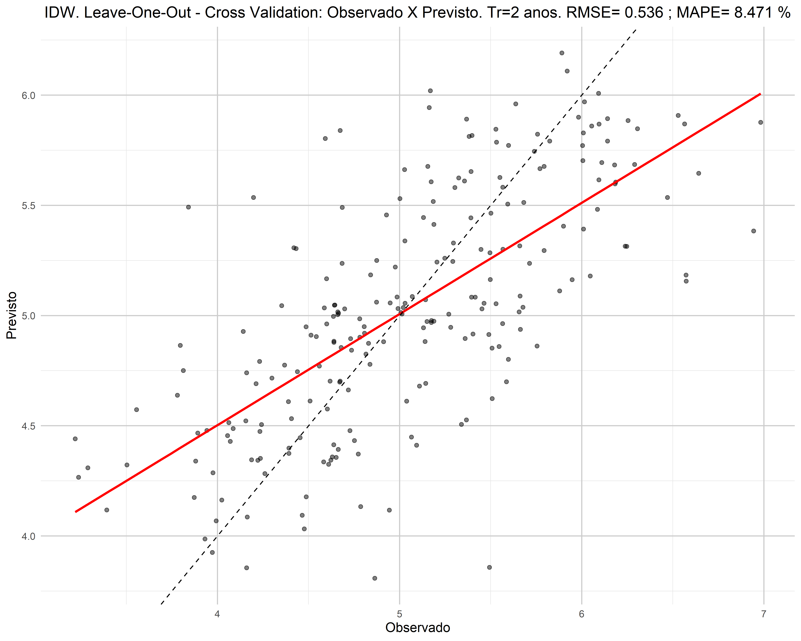 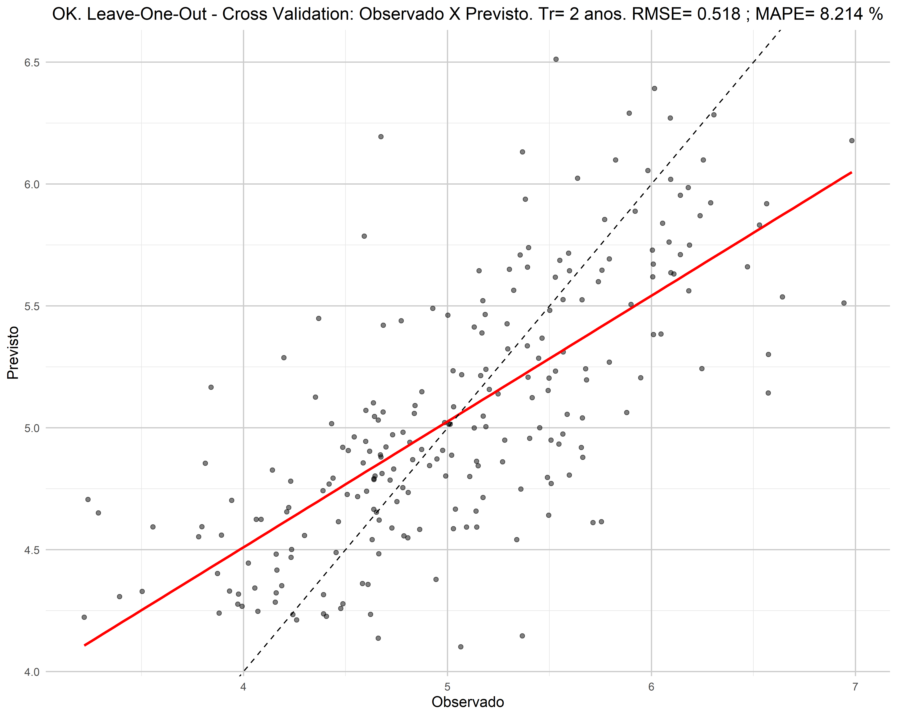
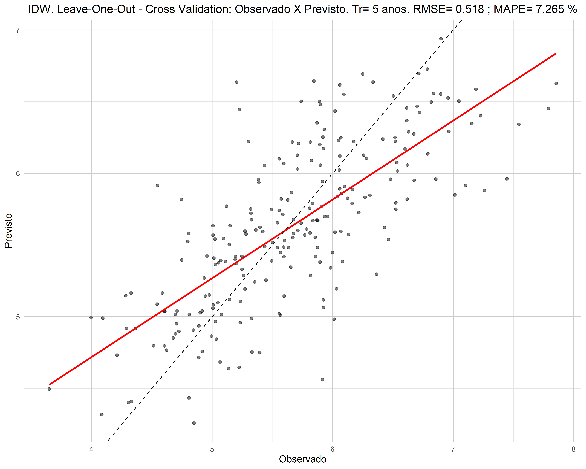 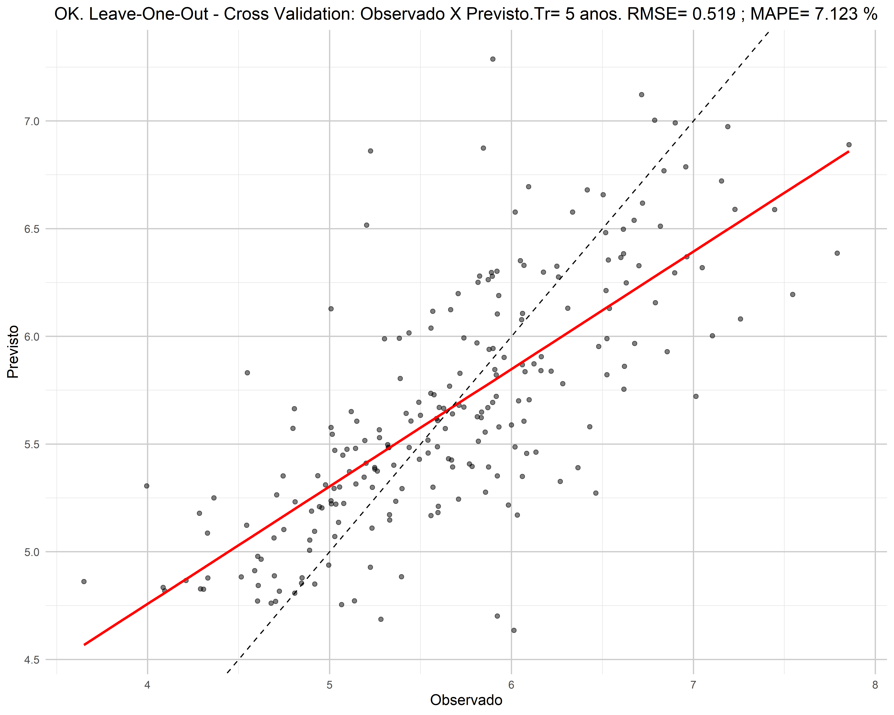
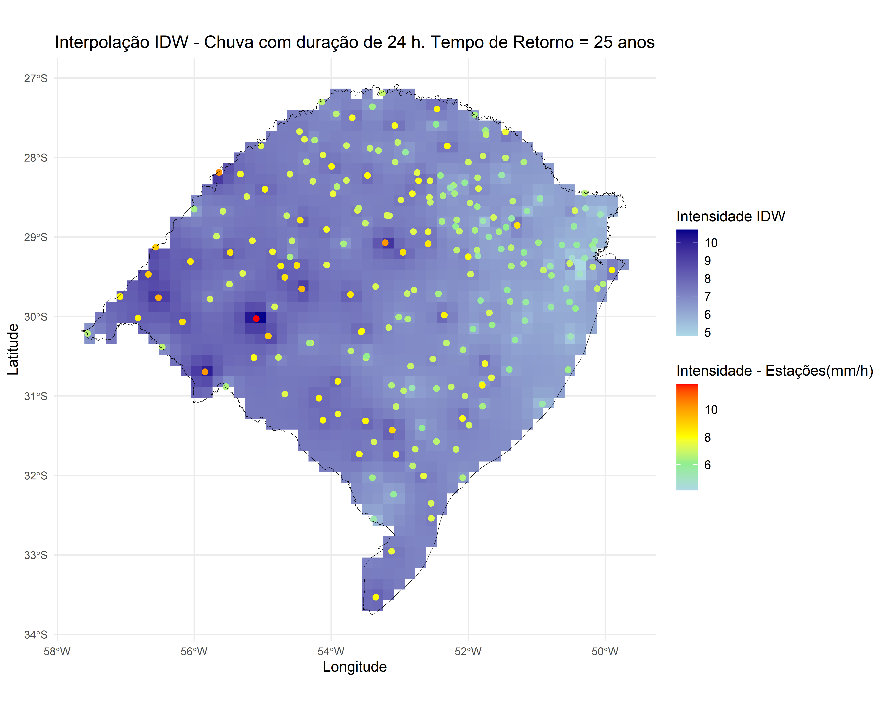
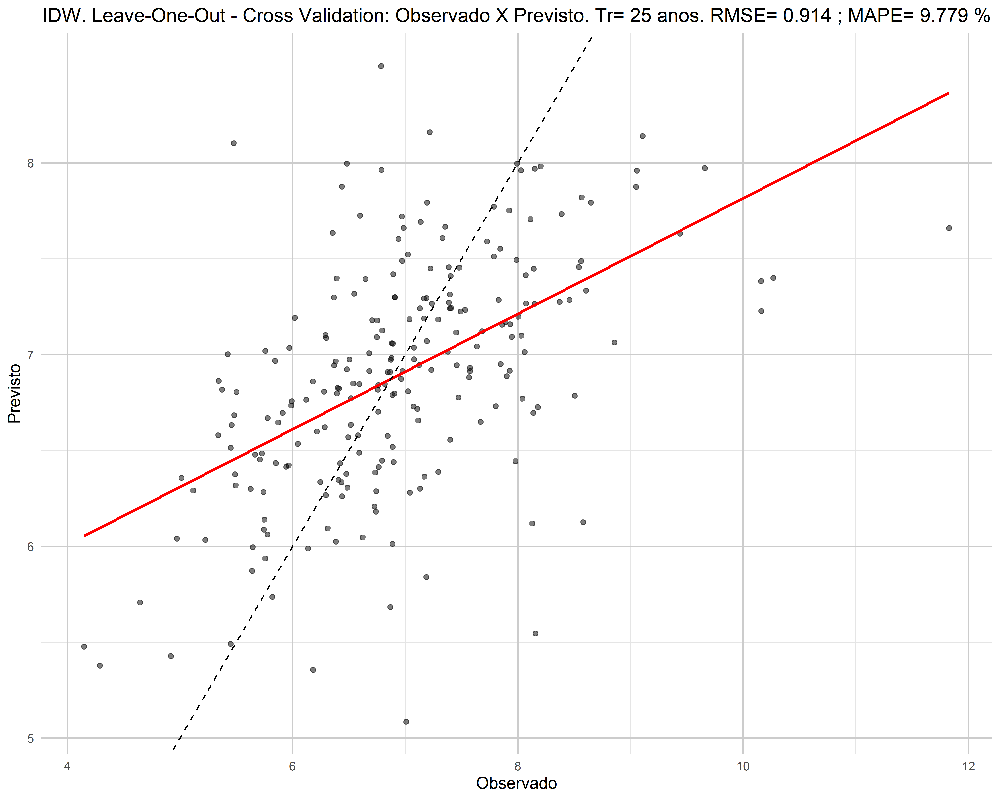 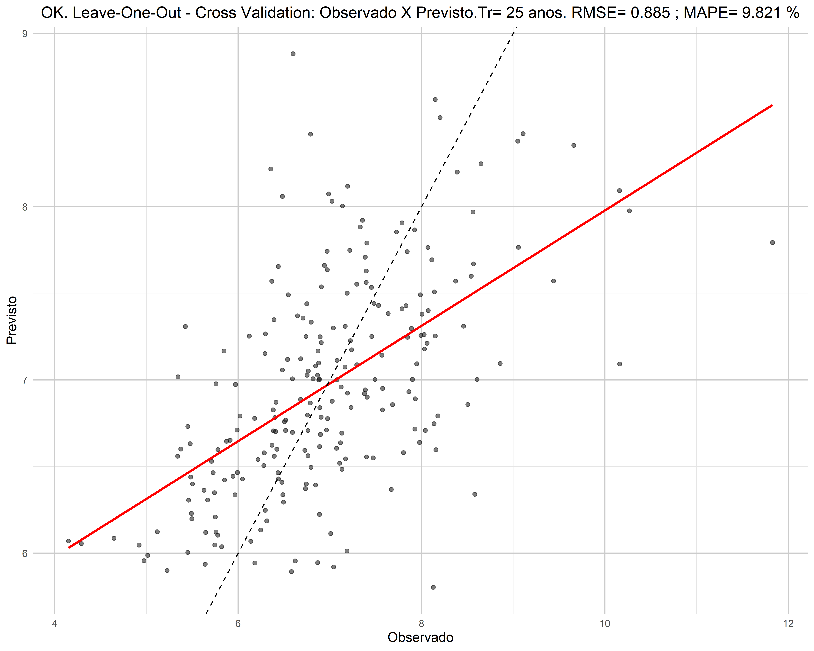
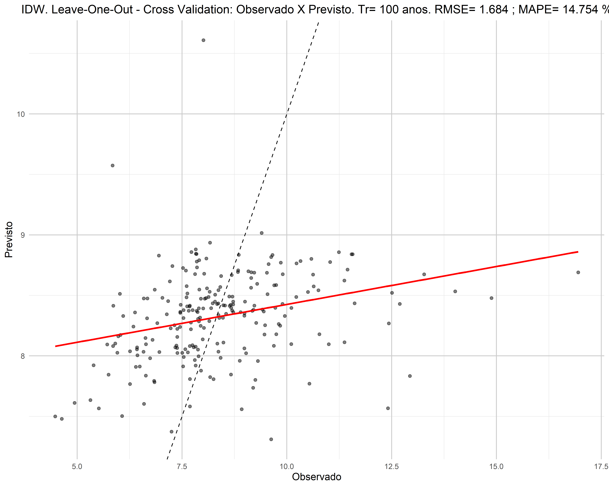 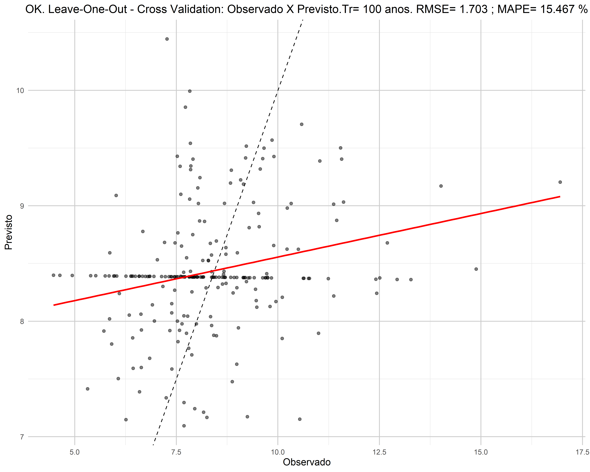
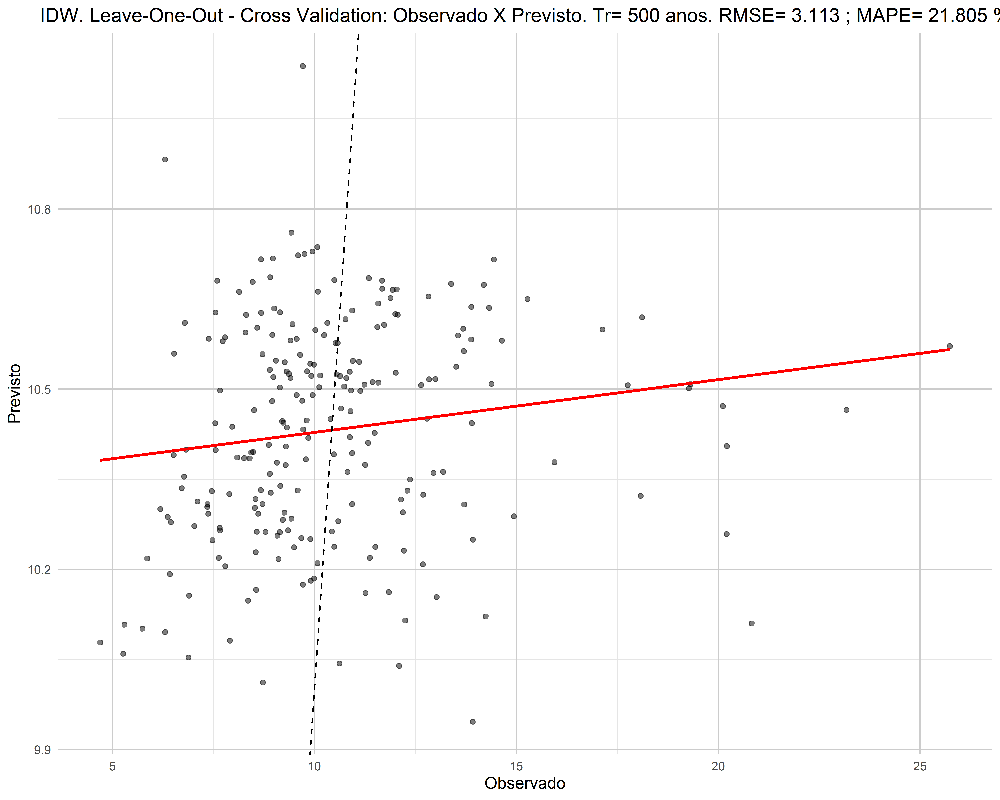 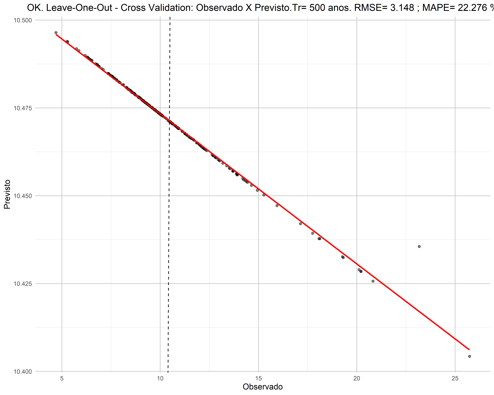
A Figure 15 (a) e Figure 15 (b) mostram a performance das métricas \(RMSE\) e \(MAPE\), respectivamente, para ambos os modelos de interpolação adotados (IDW e Krigagem), considerando diferentes tempos de retorno. Observa-se que, para tempos de retorno menores, a interpolação por IDW apresenta desempenho ligeiramente superior em relação às métricas avaliadas. No entanto, para tempos de retorno maiores, a Krigagem tende a superar a interpolação por IDW.
Embora esses resultados sugiram que a escolha do método de interpolação pode variar com o tempo de retorno, é importante considerar os princípios e objetivos subjacentes a cada método, bem como as características das variáveis ou fenômenos a serem interpolados. Como descrito na metodologia, a Krigagem é particularmente adequada para dados que apresentam padrões de autocorrelação espacial. No contexto dos dados de chuvas extremas, que são coletados por várias estações distribuídas espacialmente, a construção das curvas IDFs em cada estação é baseada em séries históricas de máximos diários anuais de precipitação. No entanto, os eventos máximos registrados em uma estação não estão necessariamente correlacionados com os eventos máximos registrados em outras estações. Em outras palavras, a chuva máxima observada no histórico anual de uma estação não precisa corresponder ao mesmo evento de chuva que gerou o valor máximo anual em outra estação. Contudo, certamente, entre estações muito próximas pode haver registros de chuvas máximas que foram oriundas do mesmo evento, ou, ainda, mesmo para eventos de chuvas máximas independentes, pode existir correlação devido a outros padrões de sistemas meteorológicos que podem afetar áreas adjacentes simultaneamente. Este campo permanece aberto para pesquisas e o aprimoramento de técnicas de regionalização que visem reduzir as incertezas associadas à espacialização das curvas IDFs.
3.3 Incertezas entre os modelos de distribuições e métodos de estimativa de parâmetros
As Figuras 16 a 20 mostram os resultados obtidos para as diferenças percentuais entre os valores máximos e mínimos obtidos a partir das três distribuições testadas (GUM, GAM e GEV) e dos dois métodos de estimativa de parâmetros empregados (MOM e MML). Portanto, apresenta-se em termos percentuais, uma estimativa das incertezas em relação às distribuições e métodos de estimativa de parâmetros empregados. Verifica-se, conforme esperado, que quanto maior o tempo de retorno maior a variância entre os valores calculados e, portanto, maior a incerteza. Para os tempos de retorno entre 2 a 25 anos, as diferenças atingiram no máximo cerca de 40%, enquanto para tempos de retorno entre 100 e 500 anos, essas diferenças podem ultrapassar 50% chegando até cerca de 100%. Outro aspecto que pode ser observado comparando as figuras 16 a 20 com as figuras 10 a 15 é que as maiores incertezas, não necessariamente estão associadas as estações que apresentam os maiores volumes de chuvas. Dessa forma, cada estação possui suas características intrínsecas relacionadas à incertezas.
3.4 Estimativa do erro entre as bases de dados em grade e as estações pluviométricas
As Figuras 21 a 25 apresentam os resultados comparativos das diferenças percentuais entre as intensidades de chuva de duração de 24 horas previstas a partir das IDFs ajustadas para as estações e para as bases XAVIER (a) e CHIRPS (b) considerando os tempos de retorno de 2, 5, 25, 100 e 500 anos, respectivamente. Os valores negativos nos percentuais indicam uma tendência de se subestimar os valores calculados a partir das estações quando se utilizam as IDFs obtidas a partir dos dados em grade. As cores mais avermelhadas mostram diferenças percentuais negativas mais acentuadas. Percebe-se que para ambas as bases há uma tendência espacial de subestimar os valores de chuva em relação àqueles obtidos a partir das estações. Essas diferenças tendem a aumentar em função do tempo de retorno considerado ultrapassando uma diferença de 100% para tempos de retorno maiores (100 e 500 anos).

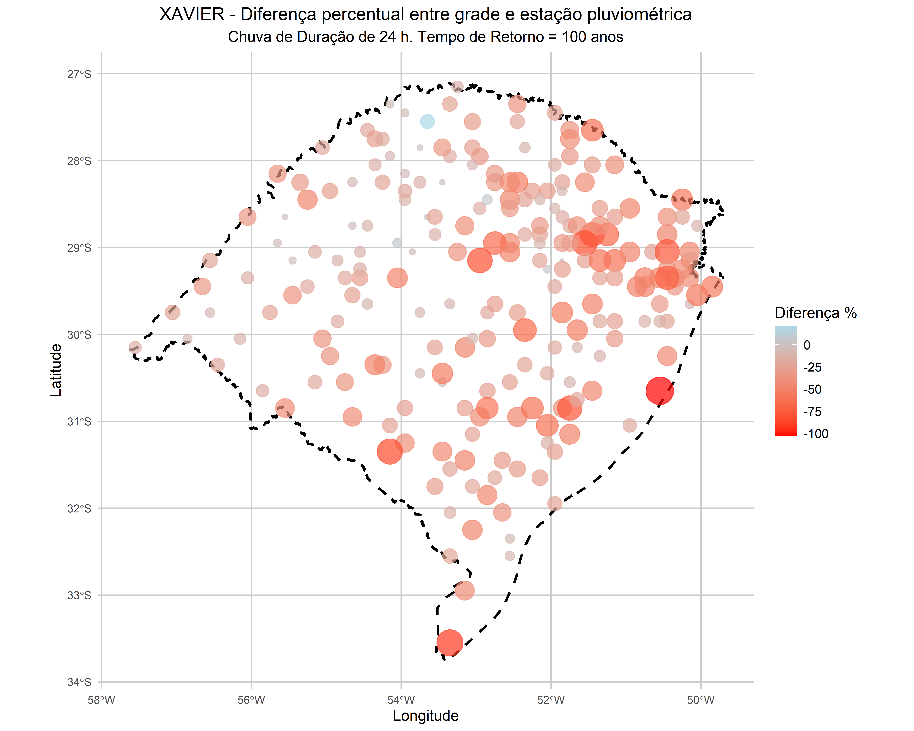
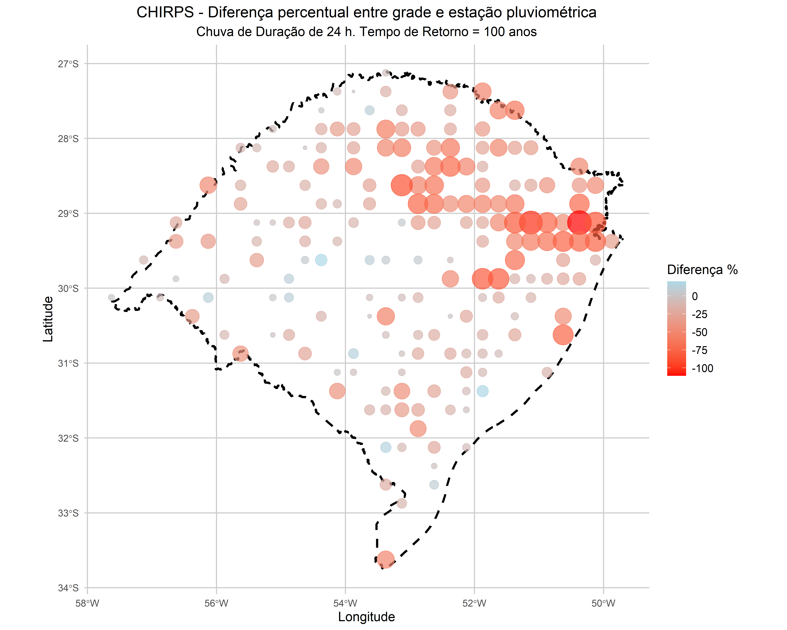
3.5 Interpolação a partir dos parâmetros das IDFs
As Figuras 31 a 35 apresentam os resultados comparativos das interpolações realizadas a partir dos parâmetros das IDFs por IDW e OK para os diferentes tempos de retorno testados (2, 5, 25, 100 e 500 anos), respectivamente. Para cada figura dessa sequência são apresentados os resultados da espacialização por IDW (a) e OK (b).
Comparando as Figuras 31 a 35 com as Figuras 10 a 14, verifica-se que as diferenças entre interpolação dos quantis obtidos das estações para as pontos de grade, ou a interpolação dos parãmetros das IDFs para os pontos de grade para, em seguida, serem calculados os quantis de chuva não representou diferença relevante.

3.6 IDFs para os municípios
A partir da interpolação por IDW dos parâmetros das curvas IDFs das estações foram geradas curvas IDFs para todas as sedes municipais do Rio Grande do Sul. Para interpolação, foram adotados os expoentes de melhor desempenho e a distribuição GEV, com parâmetros definidos pelo método MML. O aplicativo a seguir permite a seleção da sede municipal e a geração das curvas IDFs, sendo possível visualizar a equação, bem como os resultados na forma de tabelas.
4 Conclusões
Este estudo comparou e analisou a espacialização dos dados provenientes das estações pluviométricas da base HIDRO com os dados de precipitação em grade fornecidos pelas bases XAVIER e CHIRPS, amplamente utilizadas no Brasil. Os resultados dos padrões de chuvas extremas, obtidos por meio das equações IDFs das estações pluviométricas da base HIDRO, foram comparados com aqueles derivados das bases em grade.
A análise, realizada para o estado do Rio Grande do Sul, revelou diferenças significativas nos quantis de chuva das curvas IDFs, com dados interpolados utilizando os métodos IDW e Krigagem, considerando diferentes distribuições de máximos (Gumbel, GEV e Exponencial) e técnicas para obtenção de parâmetros na análise de frequência. As incertezas entre as distribuições de extremos foram avaliadas, e as curvas IDFs foram interpoladas para todas as sedes municipais do estado. Os resultados indicam que os dados em grade tendem a subestimar os quantis de chuva, sugerindo a necessidade de uma análise cuidadosa ao utilizar esses dados para o dimensionamento de infraestruturas hídricas.
Referências
Citation
@online{rampinelli](https://cassiorampinelli.netlify.app/)2024,
author = {Rampinelli{]}(https://cassiorampinelli.netlify.app/),
{[}Cássio and Aires de Souza, Saulo},
title = {Análise {Comparativa} de {Chuvas} {Extremas:} {Dados} de
{Estações} {Pluviométricas} {X} {Dados} Em {Grade} Na {Região} Do
{Rio} {Grande} Do {Sul}},
date = {2024-09-04},
langid = {en},
abstract = {::: \{style=“text-align: justify;”\} As relações IDF
(Intensidade-Duração-Frequência) são fundamentais para o
dimensionamento adequado de infraestruturas, como sistemas de
drenagem urbana, canais, galerias pluviais, pontes, passagens
molhadas, reservatórios e barragens. Compreender as relações entre a
intensidade e a duração das chuvas, aliadas à sua frequência (ou
recorrência), permite projetar sistemas capazes de lidar
eficientemente com os volumes de água esperados, minimizando os
riscos de alagamentos e inundações. A limitação na cobertura
espacial das estações pluviométricas exige a espacialização dos
dados de chuva e a necessidade de interpolar essas informações para
locais sem medições disponíveis. Embora os dados de precipitação
fornecidos por grades, frequentemente derivados de modelos
climáticos e técnicas de interpolação, sejam valiosos para
regionalizar informações de chuvas, eles geralmente utilizam
resoluções espaciais de dezenas a centenas de quilômetros, o que
pode limitar a captura de variabilidades locais e eventos extremos
específicos.Nesse contexto, este estudo teve como objetivo comparar
e analisar a espacialização dos dados provenientes diretamente das
estações pluviométricas da base HIDRO com os dados de precipitação
em grade fornecidos pelas bases XAVIER e CHIRPS, amplamente
empregadas no Brasil. Foram comparados os resultados dos padrões de
chuvas extremas obtidos por meio das equações IDFs diretamente das
estações pluviométricas da base HIDRO com aqueles derivados das
bases em grade. A área de estudo abrange todo o estado do Rio Grande
do Sul. As diferenças nos quantis de chuva das curvas IDFs foram
avaliadas com dados interpolados utilizando os métodos IDW e
Krigagem, considerando diferentes distribuições de máximos (Gumbel,
GEV e Exponencial) e técnicas para obtenção de parâmetros na análise
de frequência. As incertezas entre as distribuições de extremos
adotadas foram examinadas e as curvas IDFs foram interpoladas para
todas as sedes municipais do estado do Rio Grande do Sul. Os
resultados indicam que os dados disponibilizados em grade tendem a
subestimar os quantis de chuva.}
}